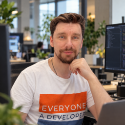

Hi, I'm Ivan.
A DevOps engineer, an open-source enthusiast, and someone who enjoys figuring things out.

I like making things work - and making them understandable.
My work revolves around infrastructure, CI/CD, containers, Kubernetes, and automation. I enjoy turning a fragile manual process into something repeatable, observable, and easier to maintain.
I care about open source and free software: the freedom to learn how something works, improve it, and share those improvements. BIVOPS is my place to share practical knowledge and build small tools that others can use.
Different tools. One connected workflow.
My interests and work span the path from infrastructure to application delivery.
- Infrastructure
- AWS · Terraform · Ansible
- Platform engineering
- Kubernetes · Helm · Kubernetes operators
- Delivery
- CI/CD · GitOps · Argo CD
- Secrets management
- Vault
- Code & automation
- Go · AI agents
A useful project deserves a solid foundation.
If you're building a free project that benefits the community, I may be able to help with infrastructure, CI/CD, containers, or Kubernetes - at no charge for my time.
This could be an open-source tool, a free educational resource, or a volunteer initiative. Tell me what you're building, who it helps, and where you're stuck. We'll find a manageable piece of work and see what's possible.
Subject to availability. Hosting and other third-party costs are agreed separately.
A question is a good place to start.
You don't need a full project brief. If you have an infrastructure question or would like an experienced second opinion, you're welcome to get in touch. I'm happy to share what I know.